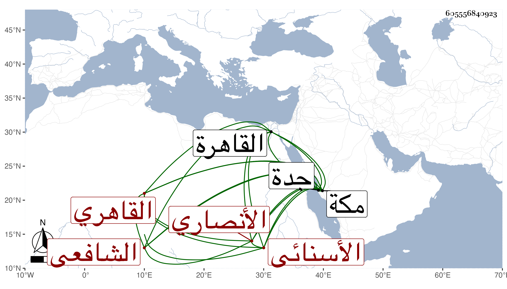

0902Sakhawi.DawLamic.ITO20230111-ara1.EIS1600.605556840923
Biography ID: 605556840923
أحمد بن عبد الرحمن بن أحمد بن سليمان البهاء بن الجلال الأنصاري الأسنائي الأصل القاهري الشافعي الآتي أبوه ويعرف كسلفه بابن العكم . ولد قبل الأربعين وثمانمائة وناب في القضاء بعد وفاة أبيه بل ولي أمانة الحكم وحبس الأسيوطي يده بأخرة ثم رفعه بالكلية زكريا وصار مقتصرا على النيابة إلى أن سافر في البحر حين رأى اختلال أمر قاضيه وجماعته فوصل مكة في شعبان سنة اثنتين وتسعين على هيئة إملاق فدام بها حتى حج وبلغه وفاة ولد له فاشتد حزنه ولم يلبث أن تعلل ومل فرجع إلى جدة ليتوجه منها إلى القاهرة بعد الزيارة فاشتد عليه الضعف بها فعاد لمكة فتزايد ضعفه واستمر كذلك نحو شهرين إلى أن مات في ثالث عشري جمادى الأولى أو الثانية سنة ثلاث وتسعين ثاني يوم طلق زوجة له كان اتصل بها هناك وبالغت في خدمته ويقال أنه لم يكن حينئذ واعيا وصلى عليه بعض عصر يومه ثم دفن بالمعلاة بتربة لابن شمس وكانت فيه حشمة في الجملة لكن مع تساهل شديد عفا الله عنه .
